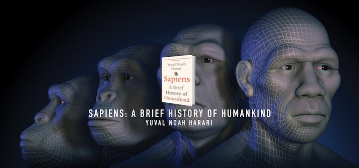

2016年度最佳读物，值得一生推荐的好书。作者以上帝的视角回顾了人类发展史上的三次革命，然而这并不仅仅是一本简单的历史书，除了举例和陈述外，作者从心理学、经济学、哲学等多角度对历史的抉择进行了分析。虽然作者人类发展持较悲观的态度，很多观点略显消极和偏激，但读完之后仍有一股三观爆刷的快感。

1. 认知革命构造了虚构的世界
人类语言真正最独特的功能，在于能够传达关于一些根本不存在的事物的信息，“虚构”这件事的重点不只在于让人类能够拥有想象，更重要的是可以“一起”想象，编织出种种共同的虚构故事，不管是《圣经》的《创世记》、澳大利亚原住民的“梦世记”（Dreamtime），甚至连现代所谓的银行和国家其实也是种想象。这样的虚构故事赋予智人前所未有的能力，让我们得以集结大批人力、灵活合作。任何大规模人类合作的根基，都在于某种只存在于集体想象中的虚构故事。
自从认知革命之后，智人就能依据不断变化的需求迅速调整行为。这等于开启了一条采用“文化演化”的快速道路，而不再停留在“基因演化”这条总是堵车的道路上。走上这条快速道路之后，智人合作的能力一日千里，很快就远远甩掉了其他所有人类和动物物种。
2.农业革命降低了幸福感
农业时代前的采集者有健康和多样化的饮食、相对较短的工作时间，也少有传染病的发生，许多专家将这种社会定义为“最初的富裕社会”。农业革命所带来的非但不是轻松生活的新时代，反而让农民过着比采集者更辛苦、更不满足的生活。农业革命让人类的食物总量增加，但量的增加并不代表吃得更好、过得更悠闲，反而只是造成人口爆炸，而且产生一群养尊处优、娇生惯养的精英分子。普遍来说，农民的工作要比采集者更辛苦，而且到头来的饮食还要更糟。历史只告诉了我们极少数的人在做什么，而其他绝大多数人的生活就是不停挑水耕田。农业革命可说是史上最大的一桩骗局。 到底是我们征服了小麦，还是小麦驯化了人类？
我们从农业革命能学到的最重要一课，很可能就是物种演化上的成功并不代表个体的幸福。研究像小麦和玉米这些植物的时候，或许纯粹的演化观点还有些道理。但对于像是牛、羊、智人这些有着复杂情感的动物来说，就必须想想演化上的成功会对个体的生活有什么影响。每当人类整体的能力大幅增加、看来似乎大获成功，个人的苦痛也总是随之增长。种种先让生活变得轻松的努力，反而给人带来无穷的麻烦；其实人类在历史上一直不断重蹈覆辙，道理都相同：因为我们无法真正了解各种决定最后的结果。工作努力辛苦一些，生活也就能过得好一点。不过，这只是理想的状况。计划的第一部分进行得很顺利。人们确实工作得更努力也更辛苦。但大家没想到孩子的数量也多了，于是多出的小麦也就有更多小孩要分。这些远古的农民也没想到，母乳喂得少了，粥喂得多了，就让孩子的免疫系统下降，而且永久聚落也成了疾病传染的温床。他们也没有预见到，由于增加了对单一食物来源的依赖，实际上他们使自己更容易受到旱灾的威胁。
就算今天，仍然如此。有多少年轻的大学毕业生投身大企业、从事各种劳心劳力的工作，发誓要努力赚钱，好在35岁就退休，去从事他们真正有兴趣的事业？但等他们到了35岁，却发现自己背着巨额贷款，要付子女的学费，要养在高级住宅区的豪宅，每家得有两部车，而且觉得生活里不能没有高级红酒和国外的假期。他们该怎么做？他们会放下一切，回去野外采果子挖树根吗？当然不可能，而是加倍努力，继续把自己累的半死。
3.农业革命建立了秩序
不管是汉谟拉比还是美国的开国元勋，心中都有个想象的现实，想象着这个世界有着放诸四海皆准、永恒不变的正义原则（例如平等或阶级），但这种不变的原则其实只存在于智人丰富的想象力里，只存在于他们创造并告诉彼此的虚构故事中。这些原则，从来就没有客观的正确性。每一种由想象建构出来的秩序，都绝不会承认自己出于想象和虚构，而会大谈自己是自然、必然的结果。文字、阶级、货币、帝国、宗教等因素共同维系着社会秩序的统一和发展。
3.1 文字
如果人类的基因里并没有大规模合作的生物本能，所有的合作网络究竟如何维系？简单的讲法，是人类创造出了由想象建构的秩序、发明了文字，以这两者补足我们基因中的不足。
3.2 阶级
阶级有其重要功能。有了阶级之后，陌生人不用浪费时间和精力真正了解彼此，也能知道该如何对待对方。大多数社会政治阶级制度其实都没有逻辑或生物学的基础，不过就是由历史的偶然事件引起，再用虚构的故事延续壮大。阶级自从出现的第一天起就注定永远存在。只要有生产的不平衡，有人类的协同做事，有人类之间的差异化，阶级就不会被消灭。
3.3 货币
金钱正是有史以来最普遍也最有效的互信系统。往来于印度和地中海之间的商人，开始注意到黄金的价差，于是在印度便宜购入黄金，再回到地中海高价出售。于是，印度市场上的黄金需求暴增，价格跟着水涨船高。与此同时，在地中海黄金供给大量增加，价格因此下降。不用多久，黄金在印度和地中海的价格就相去无几。正因为地中海人相信黄金有价，印度人也开始跟着相信。就算黄金对印度人来说仍然没有实际用途，光是因为地中海人重视黄金，就足以让印度人跟着重视起来。以此类推，就算有些人是我们憎恶、讨厌、嘲笑的对象，如果他们相信贝壳、美元或电子数据的价值，就足以让我们也跟着相信这些事物有价值。
我们不信任陌生人，但我们现在也不信任隔壁的邻居，而只是信任他们手上的钱。没钱，就没有信任。等到钱渗透冲垮了社会、宗教和国家所筑成的大坝，世界就成了巨大而无情的市场。于是，人类的经济史就像跳着微妙的舞步。我们用金钱来促进与陌生人的合作，但又害怕这会破坏人类的价值和亲密的关系。一方面，我们也想打破那些限制金钱和商业流动的社会大坝；但另一方面，我们又不断筑起新的大坝，希望保护社会、宗教和环境免受市场力量的奴役。
3.4 帝国
帝国是造成民族多样性大幅减少的主因之一。帝国就像一台压路机，将许多民族独特的多样性逐渐夯平（例如努曼西亚人），整合制造出他们更大的新群体。于是，人类就像是一个大家庭：父母享有特权，但同时也要负责孩子的幸福。这种新的帝国思想从居鲁士和波斯人传给了亚历山大大帝，再传给希腊国王、古罗马皇帝、穆斯林哈里发、印度君主，最后甚至还传给苏联总理和美国总统。这种良性的帝国思想让帝国的存在合理化，不仅让属民打消了反抗的念头，就算独立的民族也不再反抗帝国的扩张。
3.5 宗教
我们今天常认为宗教造成的是歧视、争端、分裂。但在金钱和帝国之外，宗教正是第三种让人类统一的力量。正因为所有的社会秩序和阶级都只是想象的产物，所以它们也十分脆弱，而且社会规模越大，反而就越脆弱。而在历史上，宗教的重要性就在于让这些脆弱的架构有了超人类的合法性。有了宗教之后，就能说法律并不只是人类自己的设计和想象，而是来自一种绝对的神圣最高权柄。这样一来，至少某些基本的法则便不容动摇，从而确保社会稳定。农业革命最初的宗教意义，就是让动植物从与人类平等的生物，变成了人类的所有物。
4.研究历史的意义
对某个时代的了解越透彻，反而就越难解释为什么发生了这个事件而不是那个事件。但如果对某个时期只是一知半解，就很容易受到结果影响，只看到那些最后成真的可能性。事实上，真正最知道当时情况的人（也就是活在当时的人），正是最看不出历史走向的人。像是对于在君士坦丁统治下的一般古罗马人来说，未来就像是雾里看花。历史的铁则就是：事后看来无可避免的事，在当时看来总是毫不明显。
历史就是这样的一团混沌，历史就是无法解释得斩钉截铁，无法预测得十拿九稳。不仅如此，历史还是所谓的“二级”混沌系统。混沌系统分成两级，一级混沌指的是“不会因为预测而改变”。至于二级混沌系统，指的是“会受到预测的影响而改变”，因此就永远无法准确预测。例如市场就属于二级混沌系统。
我们之所以研究历史，不是为了要知道未来，而是要拓展视野，要了解现在的种种绝非“自然”，也并非无可避免。未来的可能性远超过我们的想象。没有任何证据，证明历史是为了人类的利益而进展；而原因就在于“利益”并没有客观的衡量标准。不同的文化对于“善”的定义不同，而且并没有客观标准可以决定何者为佳。虽然我们无法解释历史做出的选择，但有一点可以确定：历史的选择绝不是为了人类的利益。随着历史演进，毫无证据显示人类的福祉必然提升。
5.科学发展
欧洲依靠科学革命在现代晚期称霸全球绝不是意外，是由许多主客观的历史因素共同造就。中国和波斯其实并不缺乏制作蒸汽机的科技（当时要照抄或是购买都完全不成问题），他们缺少的是西方的价值观、故事、司法系统和社会政治结构，这些在西方花了数个世纪才形成及成熟，就算想要照抄，也无法在一夕之间内化。之所以法国和美国能够很快跟上英国的脚步，是因为他们本来就和英国共享一套最重要的故事和社会结构。而中国和波斯总是追赶不及，则是因为整个关于社会的想法和组织就是不同。
5.1 承认无知
科学革命并不是“知识的革命”，而是“无知的革命”。现代科学愿意承认自己的无知，就让它比所有先前的知识体系更具活力、更有弹性，也更有求知欲。这一点大幅提升了人类理解世界如何运作的能力，以及创造新科技的能力。
5.2 帝国主义的野心
科学研究之所以能得到经费，多半是因为有人认为这些研究有助于达到某些政治、经济或宗教的目的。科学家本身并不一定会察觉到各种控制金钱流动的政治、经济和宗教利益，许多科学家确实只是纯粹为了求知而研究。然而，真正控制科学发展进度表的，也很少是科学家。科学研究一定得和某些宗教或意识形态联手，才有蓬勃发展的可能。意识形态能够让研究所耗的成本合理化。而代价就是意识形态能够影响科学的进程表，并且决定如何使用研究成果。
郑和下西洋得以证明，当时欧洲并未占有科技上的优势。真正让欧洲人胜出的，是他们无与伦比而又贪得无厌、不断希望探索和征服的野心，郑和下西洋四处探访，对拥护明朝的各国君主提供协助，但并未试图攻占或殖民他国。现代科学和现代帝国背后的动力都是一种不满足，觉得在远方一定还有什么重要的事物，等着他们去探索、去掌握。然而，科学和帝国之间的连接还不仅如此而已。两者不只动机相同，连做法也十分类似。对现代欧洲人来说，建立帝国就像是一项科学实验，而要建立某个科学学科，也就像是一项建国大计。正因为帝国与科学密切合作，就让它们有了如此强大的力量，能让整个世界大为改观；也是因为如此，我们很难简单断言它们究竟是善是恶。正是帝国创造了我们所认识的世界，而且，其中还包含我们用以判断世界的意识形态。
5.3 资本主义的赞助
是在承认我们的无知之后，认为只要投资进行研究，一切就能变得更好。这个想法很快地就应用到了经济上。只要是相信“进步”的人，就会相信各种地理发现、科技发明和组织发展，能够提升人类生产、贸易和财富的总量。欧洲人征服世界的过程中，所需资金来源从税收逐渐转为信贷，而且也逐渐改由资本家主导，一切的目标就是要让投资取得最高的报酬。这些商业型的帝国，取得资金进行征服的效率就是高出一截。贪婪是好的，而且我们让自己过得好的时候，不只是自己得利，还能让他人受益。“利己”就是“利他”。这就是帝国资本主义的奇妙循环：信贷资助新发现，新发现带来殖民地，殖民地带来利润，利润建立起信任，信任转化为更多的信贷。
资本和政治这两者的紧密相拥，对信贷市场有深远的影响。这世界上根本不可能有完全不受政治影响的市场。毕竟，经济最重要的资源就是“信任”，而信任这种东西总是得面对种种的坑蒙拐骗。光靠着市场本身，并无法避免诈欺、窃盗和暴力的行为。这些事得由政治系统下手，立法禁止欺诈，并用警察、法庭和监狱来执行法律。
6.从此过上了幸福快乐的生活？
如今，战争成本飙升利润减少；全球帝国形成，国家已不再能够独立行事。虽然暴力和恐惧达到前所未有的高峰，但和平与安宁也同时来到历史新高。狄更斯写到法国大革命，就说“这是最好的年代，也是最坏的年代”。
金钱能够带来快乐，但有一定显限度；疾病会在短期内降低快乐感，但只要不恶化会逐渐适应；对快乐与否的影响，家庭和社群要比金钱和健康来得重要。虽然我们可以自己选择另一半、选择朋友、选择邻居，但他们也可以选择离开我们。现代社会每个人都拥有了前所未有的自由，能够决定自己要走哪条路，但也让我们越来越难真正信守承诺、不离不弃。于是，社群和家庭的凝聚力下降而解体，这个世界让我们感到越来越孤独。
生命的意义都只是错觉和幻觉。所谓的快乐，很可能只是让个人对意义的错觉和现行的集体错觉达成同步而已。不论是快感或是错觉（生命有意义）其前提都是以主观感受来测量的，但其实人最不了解的就是自己。
7.从动物到上帝
第一波的灭绝浪潮是由于采集者的扩张，接着第二波灭绝浪潮则是因为农民的扩张；这些教训，让我们得以从一个重要观点来看今日的第三波灭绝浪潮：由工业活动所造成的物种灭绝。有些环保人士声称我们的祖先总是和自然和谐相处，但可别真的这么相信。早在工业革命之前，智人就是造成最多动植物绝种的元凶。人类可以说坐上了生物学有史以来最致命物种的宝座。
认知革命以来，智人从几乎微不足道的猿类变成世界的主人，生理上并没有太多变化，可见只是大脑内部的几个小小的调整罢了，也或许再有某些小小的调整，就会引发第二次认知革命，建立全新的意识（就像是《西部世界》里机器人的觉醒），所有我们现在这个世界的意义都会变得无关紧要。
虽然人类已经拥有许多令人赞赏的能力，但我们仍然对目标感到茫然，而且似乎也仍然总是感到不满。拥有神的能力，但是不负责任、贪得无厌，而且连想要什么都不知道。天下危险，恐怕莫此为甚。
8.杂七杂八的观点
- 鸟类会飞就是因为它们有翅膀，可不是因为有什么“飞的权利”。
- 演化的基础是差异，而不是平等。
- 天生带来允许，文化造成封闭。
- 文化总会说，它只是禁止“不自然的事”。但从生物学的角度来看，这世界上根本没有什么是不自然的。只要有可能发生的事，就是自然。真正完全“不自然”的事，是指违背了自然规律，但这种事情根本就不会存在，所以也没有禁止的必要。
- 正如中世纪无法解决骑士精神和基督教的矛盾，现代社会也无法解决自由和平等的冲突。但这也不是什么缺点。像这样的矛盾，本来就是每个人类文化无法避免的，甚至还可以说是文化的引擎，为人类带来创意、提供动力。就像两个不谐和音可以让音乐往前进，人类不同的想法、概念和价值观也能逼着我们思考、批评、重新评价。一切要求一致，反而让心灵呆滞。
- 古罗马也常打败仗。但就像大多数历史上最伟大的帝国统治者一样，虽然他们可能输掉几场小战役，但总能赢得最后的整场战争。如果一个帝国连一场战役都输不起，又怎么称得上是帝国？
- 大西洋奴隶贸易并非出于对非洲人的仇恨，而现代畜牧业也同样不是出于对动物的仇恨。这两者背后共同的推手，就是冷漠。
- 过去在野外形成的种种需求，就算现在已经不是生存和繁殖所必要，仍然会持续造成主观的感受。工业化农业的悲剧在于，它一味强调动物的客观需求，却忽略了它们的主观需要。
- 工业革命不仅为人类带来了时刻表和生产线的概念，更将这些概念推广到几乎所有的人类活动当中。
9.读书的意义
引用知乎上的一个回答：当我们感到困惑时，书籍的重要性就体现出来了：你虽然没有时间博览群书，但是可以多看一些博览群书的作者的作品，站在他人的肩膀上，自然视野也就更广阔一些。至于那些道理，是老子原创还是尤瓦尔·赫拉利原创，已经不是很重要了。道理一直就在那里，只是每个人领悟的时间不同。